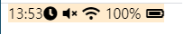
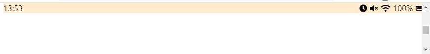
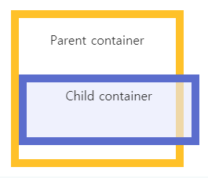

위 와 같은 status-bar 이 있다고 가정 합니다.
위 status-bar 을 nav 처럼 고정 하려고 position: fiexd; 의 속성값을 주게되면

position: fixed; 속성을 부여함과 동시에, in-line 요소로 전환됩니다.
width: 100%의 속성 값을 부여 하면,

위와 같이 스크롤도 안생기고, 우측 이 잘려 버리는 현상이 일어 납니다.
일시적인 해결방법은 positio: fixed; 속성이 부여 되었으므로, left: 0 을 해주면,
일시적으로 는 복귀되어 돌아 옵니다. 하지만!!!!
margin 또는 padding 을 부여한 경우 다시 잘려 버리게 됩니다.

그 이유는 사진과 같이 margin 또는 padding 이 box의 size에 포함 되어 우리가 예상했던, box 사이즈 + margin 또는 padding 사이즈의 box가 됩니다.
즉 width: 300px height: 100px; 의 박스에 margin: 10px; 의 속성을 부여하면, wdith: 320px, height: 120px 의 박스가 만들어 집니다.
결론
위 문제를 해결하기 위해 box-sizing: border-box; 의 속성을 부여 합니다.
box-sizing: border-box; 속성을 부여 함으로써 우리는 margin 과 padding 이 포함된 width: 300px, height: 100px; 의 박스를 만들 수 있습니다.
box-sizing: border-box; 속성을 부여 하시는 경우 *(전체 선택자) 를 통해 모든 요소에 고루 부여 하시는 것 을 추천 드립니다.